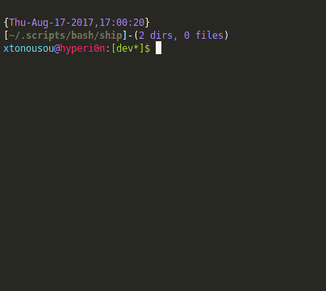
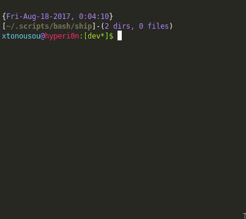
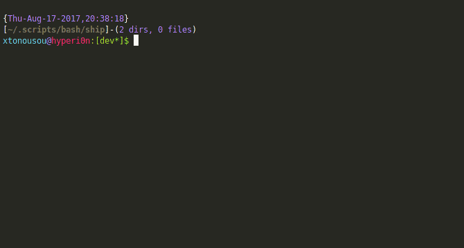
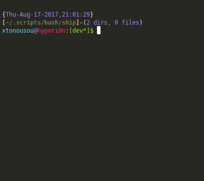
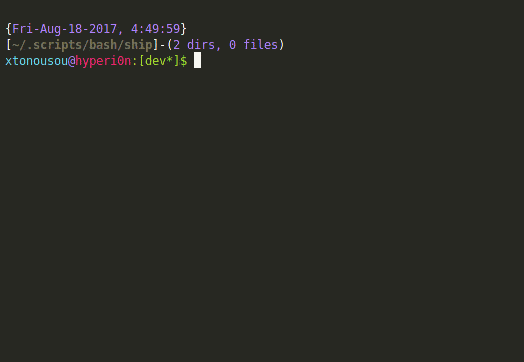

A simple, handy network addressing multitool with plenty of features
project maintained by xtonousou theme by xtonousou
Guide
Table of Contents
| 🚢 | Argument | Description | Example |
|---|---|---|---|
| ship | -4 , –ipv4 | shows active interfaces with their IPv4 address | ipv4 |
| ship | -6 , –ipv6 | shows active interfaces with their IPv6 address | ipv6 |
| ship | -a , –all | shows all information | all |
| ship | -A , –all-interfaces | shows all available network interfaces | all-interfaces |
| ship | -c , –calculate <> | shows calculated IP information | calculate-with-arg |
| ship | -d , –driver | shows each active interface’s driver | driver |
| ship | -e , –external | shows your external IP address | external |
| ship | -e , –external <> | shows external IP addresses | external-with-arg |
| ship | -f , –find <> | shows valid IP and MAC addresses found on file/s | find-with-arg |
| ship | -g , –gateway | shows gateway of online interfaces | gateway |
| ship | -h , –help | shows this help message | help |
| ship | -H , –hosts | shows active hosts on network | hosts |
| ship | -HM, –hosts-mac | shows active hosts on network with their MAC address | hosts-mac |
| ship | -i , –interfaces | shows active interfaces | interfaces |
| ship | -l , –list | shows a list of private and reserved IP addresses | list |
| ship | -m , –mac | shows active interfaces with their MAC address | mac |
| ship | -n , –neighbor | shows neighbor cache | neighbor |
| ship | -P , –port | shows a list of common ports | port |
| ship | -P , –port <> | shows connections to a port per IP | port-with-arg |
| ship | -r , –route-ipv4 <> | shows the path to a network host using IPv4 | route-ipv4-with-arg |
| ship | -r6, –route-ipv6 <> | shows the path to a network host using IPv6 | route-ipv6-with-arg |
| ship | -u , –url <> | shows valid IP and MAC addresses found on website/s | url-with-arg |
| ship | -v , –version | shows the version of script | version |
| ship | –cidr-4, –cidr-ipv4 | shows active interfaces with their IPv4 address and CIDR | cidr-ipv4 |
| ship | –cidr-6, –cidr-ipv6 | shows active interfaces with their IPv6 address and CIDR | cidr-ipv6 |
| ship | –cidr-a, –cidr-all | shows all information with CIDR | cidr-all |
| ship | –cidr-l, –cidr-list | shows a list of private and reserved IP addresses with CIDR | cidr-list |
–ipv4
Probably the most common one
Shows the local IPv4 address of each active network interfaces

–ipv6
Shows the local IPv6 address of each active network interfaces

–all
Use this to display almost all useful network information

–all-interfaces
Displays all kind of network information of the network interfaces, active or not

–calculate <>
This is an alternative to ipcalc and sipcalc together
It’s under development, but half of their features can be used with ease
To generate HTML code

–driver
Shows the driver used of each active network interface

–external
Returns your external IP, a.k.a. Public IP

–external <>
Returns the external IPs of the passed domains

Additional Info
If you want only the IP address part, you can parse it like that (replace values)
Note that sometimes, multiple values of the same domain are returned. For that reason, you can manipulate the stream with head and/or tail
$ bash ship.sh -e DOMAIN_1 DOMAIN_2 DOMAINn | awk '/DOMAIN/{print $1}'
–find <>
Extracts all addresses (IPv4, IPv6 and MAC) from the files specified and pretty prints them on stdout

–gateway
Returns the gateway IP address of each active network interface

Additional Info
If you want only the IP address part, you can parse it like that (replace value)
$ bash ship.sh -g | awk '/NAME_OF_NETWORK_INTERFACE/{print $2}'
–help
Forgot something, want to know how to use ship, or just a newbie?

–hosts
Pings the entire current network you are connected to, and returns all active hosts (their IPv4 address)

–hosts-mac
Pings the entire current network you are connected to, and returns all active hosts (their IPv4 address and their MAC address)

–interfaces
Returns all active network interfaces

–list
Returns a list of common IPv4 and IPv6 addresses (bogon IPs)
You can use them to configure your firewall, or even identify ranges

–mac
Displays the MAC address of each active network interface

Additional Info
If you want only the MAC address part, you can parse it like that (replace value)
$ bash ship.sh -m | awk '/NAME_OF_NETWORK_INTERFACE/{print $2}'
–neighbor
Displays the IPv4 and MAC address of each neighbor (ARP cache)
–port
Displays a list of common protocols and ports. You can use the list to monitor your network with the argument below this one --port <>

–port <>
Shows all IPv4 addresses you are connected to and how many of them exist by specifying the port. You can use the list above this one --port to see which port/s correspond to which protocol

–route-ipv4 <>
Displays step by step, the route to the host specified (IPv4)

–route-ipv6 <>
Displays step by step, the route to the host specified (IPv6)
Unfortunately, I cannot test upon IPv6 (yet), the below example shows a snapshot of a machine connected to a non-IPv6 network

–url <>
Extracts all addresses (IPv4, IPv6 and MAC) from the online documents specified and pretty prints them on stdout
No javascript generated content is displayed

–version
Shows the version of the script with author’s information

–cidr-ipv4
Shows the local IPv4 address of each active network interfaces with CIDR notation

–cidr-ipv6
Shows the local IPv6 address of each active network interfaces with CIDR notation

–cidr-all
Use this to display almost all useful network information with CIDR notation

–cidr-list
Returns a list of common IPv4 and IPv6 addresses (bogon IPs) with CIDR notation
You can use them to configure your firewall, or even identify ranges